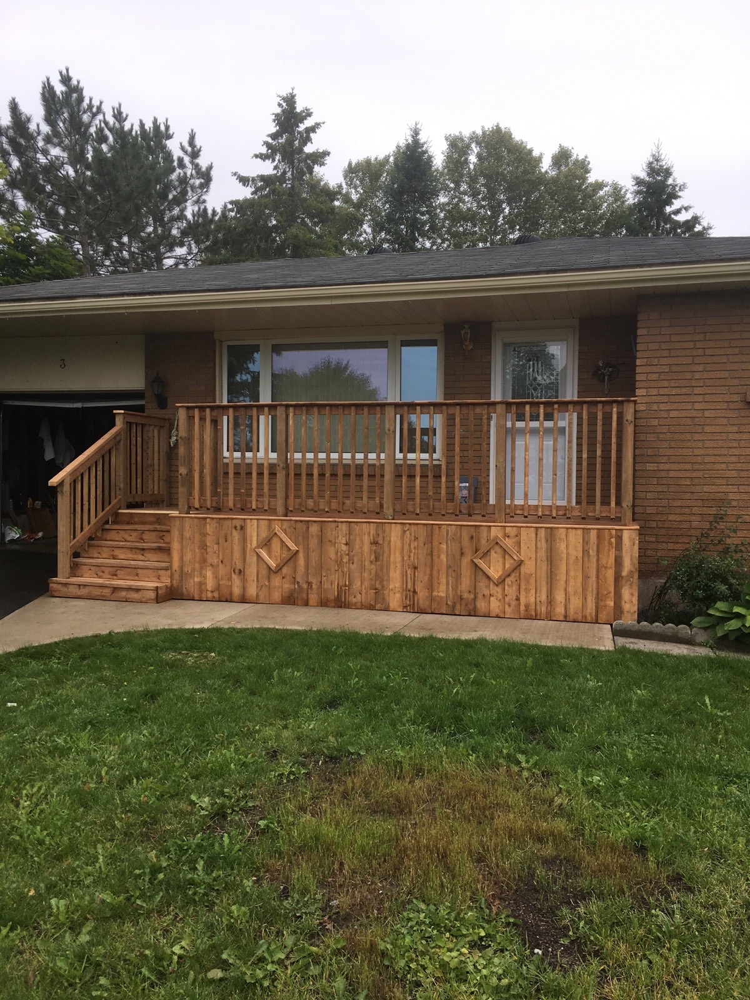

Gazebos & Sunrooms
Enjoy the outdoors more comfortably with custom-built gazebos, sunrooms, and enclosed spaces designed for long-term use and curb appeal.

Trusted locally for decades
Capco Construction is a family-owned local business serving the community since 1990. From decks, fences, and exterior structures to accessibility upgrades, repairs, and general contracting, Capco delivers dependable workmanship and straightforward service.
About Capco
Capco Construction has been serving Sault Ste. Marie since 1990. As a family-owned business, the company has built its reputation through consistent service, skilled craftsmanship, and a commitment to doing the work right.
From accessibility ramps and fences to decks, exterior builds, repairs, and custom contracting work, Capco helps homeowners and property owners improve how their spaces function and look.

Services
These featured service areas are based on the previous Capco site and on the work shown in your uploaded project photos.
Enjoy the outdoors more comfortably with custom-built gazebos, sunrooms, and enclosed spaces designed for long-term use and curb appeal.

From simple platforms to detailed outdoor living spaces, Capco builds decks that match your property and how you use the space.

Privacy, structure, and clean property lines with professionally built fencing that balances strength, function, and appearance.

Mobility-focused ramp construction that improves access, independence, and day-to-day usability for homes and businesses.

Thoughtful improvement work to refresh outdated areas, improve function, and support broader renovation plans.

Reliable project support across a wide range of residential jobs, backed by experience and a practical approach.
Why Capco
Capco has served the local market since 1990, giving clients confidence that their project is in experienced hands.
Capco focuses on the overall result, not just isolated pieces, so every build feels cohesive and professionally finished.
Outdoor structures, accessibility features, fencing, property updates, and general contracting all under one trusted local brand.
Service is built on communication, accountability, and follow-through in the community Capco knows best.
Portfolio